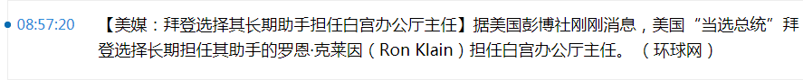

洗完澡了精神抖擞容光焕发，上网乱转还是没发现什么重要情报。这几天各路情报掮客似乎都消停了，据称「整不出啥新活儿」来。所以抽空整理下素材，《异闻录》那边准备好背景板和暗线的目录，把之前情报掮客不打自招的泄漏的国家机密兼宇宙奥秘简单归档。
这还是因为从2018年7月才开始备份重要的情报市场九省通衢の煎蛋之上出现的新刮中央宣传文案，更早一段时间情报掮客更为嚣张，但是没保存在本地。而最近一段时间以来，各大宣传阵地当中情报浓度显著下降，疑似财政吃紧大刀阔斧的减员增效。就比方说刚刚「全境查删」的花呗广告：
新刮中央贫民部简单说，因为今天是11月11日，是贫民部话语体系当中的「双十一购物节」，是辱民部话语体系当中的「四光棍打麻将节」，是弱民部话语体系当中的「空军节」。今天还是伤寒马力（马力·马龙，1869.9.23-1938.11.11）的忌日，市面上色目情报掮客引用的大批文艺精品当中的套路狠话都有了用场，包括但不限于「明年今天就是你的忌日」之类。等到今天早上还没看见有啥素材，不等了，展开其它内容。
在注释〔５４〕当中提到了，砥砺奋进八年来的前五年，看到的与今天相关的文艺精品桥段，是《西游记》当中「比丘国白鹿精」为了给龙裔续命而搜集1111个小儿心肝。而「续命擂台赛」对阵表也是色目情报掮客曾经到处扩散的素材，隔三岔五就有「赛事速递」，从1/8决赛1/4决赛到半决赛，淘汰了老布什、卡斯特罗、普密蓬·阿杜德、岩里政男……现在决赛开打了么？
当时写注释的时候看读者反应，常见表态是不以为然并嗤之以鼻，后来随着局势进展，深层次内幕不断揭开，备份之前科幻脑洞大纲当中也提到过，在九省通衢の煎蛋当中也谈笑风生过，在日记里也写过，后期注释备份脑洞的时候也安排了相关情节，在连载《异闻录》的时候更是根据实时新闻放入正文并详细解读……到了现在，「部分读者」还笑得出来么？
因为遭瘟真相还没有大白于天下，这个话题暂且放下，不过可以提前决定《设定集》正传当中的重要时间点就是11月11日，各种矛盾集中爆发。所以为了行文方便，应景提前决定了幕后黑手的称呼「厥虐赛斯」，好比《福尔摩斯》系列当中「莫里亚蒂教授」那样，使用另类字母的含义，与《异闻录》主角唤作「郭春海」是同样的理由。
刚爬起来酒劲还在头昏脑胀，上网乱转发现耍钱的新浪或曰后浪正在奔走相告一条色目含量甚高的重要情报：

16:27:48【巴林首相在美国去世】巴林王室办公厅当地时间11日上午发布消息，称巴林王室成员、内阁首相哈利法·本·萨勒曼·阿勒哈利法当天早晨去世。据王室办公厅发布的消息显示，哈利法是在美国一家医院内病逝，遗体将在近期运回巴林境内并安葬，巴林官方将进行为期一周的全国哀悼，并在公共场合降半旗志哀。哈利法·本·萨勒曼·阿勒哈利法出生于1935年，是巴林现任国王的叔叔，自巴林王国独立起一直担任内阁首相直至逝世，是全球连续任职时间最长的首相之一。（央视新闻）
看来真有人缘好情商高识大体顾大局懂政治讲规矩守纪律而应景去世的，或曰白衣天使接听国际长途电话之后看一眼手表口称「中央指示“时机已到”」然后把管子一拔。与此同时，土耳其股汇债齐升的重大利好消息频繁出现。而国际一流和谐宜居之都「高学历精英社交圈」首页今日头条位置醒目应景推荐的色目含量甚高的重要情报是这个画风：

配合南直隶「远东第一体育论坛」的娱乐素材《说最狠的话，挨最毒的打！》，结合《骑马与砍杀》游戏背景，应该与前面注释当中提到的波兰视角「大洪水时代」当中哥萨克乌克兰与奥特曼土耳其之间的互动有关，光看见贼吃肉，看不见贼挨打，可不行。
而在《历史上各个国家地区把犹太人赶走后当地的经济有出现复苏吗，为什么？》话题当中，高赞回答引用了一段历史真相：
在西班牙，天主教徒“收复失地”后，很快就展开了对穆斯林和犹太教徒的驱逐。面对西班牙驱逐犹太人的行为，奥斯曼苏丹巴耶济德二世下令立刻派遣海军将这些难民接入帝国，并在书信中挖苦西班牙国王斐迪南道：
西班牙国王斐迪南二世是个伟大的统治者，宁愿自己贫穷也要把财富赠送给别人，我实在是太需要这些人才了。
一切历史都是当代史，涉及政治和意识形态斗争的时候，曰若稽古通常不是为了以史为鉴，而是为了洗地。
当年伊比利亚和安纳托利亚什么样，经济是怎么个此消彼长法，想必如今的兲朝人民群众并不关心。倒是蚂蚁金服两万亿暴雷隐患导致之前所有境内小贷会社卷款跑路拍屁股走人之规模对比之下相形见绌，结合土耳其形势一片大好不是小好，怎么看怎么像是色目太君颠倒黑白混淆是非倒打一耙贼喊捉贼。
这种时候，哪怕看见吹捧纳粹的情报刷屏，都应该三思而后行，先别忙着激动，好好考虑一下六百万色目死鬼是不是可怜之人必有可恨之处，然后摇身一变就以亡灵身份骨肉移民美帝灯塔国，专挑摇摆州落户给谁投票去了也。
又转了一圈，发现国际一流和谐宜居之都「高学历精英社交圈」正在首页今日头条位置醒目应景推荐了一条阴谋诡计色彩甚为充沛的重要情报：
什么是曼德拉效应？不惮以最大的恶意揣测，这是幕后黑手在那科技不甚昌明民智不甚大开的万恶的旧时代，开展的一项邪恶的社会实验，目的是探讨《1984》或《美丽新世界》建立的可能性。
简单说，通过指使情报掮客于民间到处传播谣言，以阴阳版《顺天时报》为宣传阵地，公开发表假新闻放风带节奏，暗地里印刷真相版塞入各大图书馆档案馆作为唯物主义证据，同时建立防火长城隔绝内外对任何辟谣报道以「政治敏感」理由「亦当删去」，从而实现「在一段时间内欺骗所有人」顺便「在所有时间欺骗一部分人」的效果。
当代科技昌明民智大开，并不意味着纸里包不住火，恰恰相反，正如雅虎迫于财政压力删除所有社区数据一样，赛博朋克时代销赃灭迹只会比实体出版时代更简单。也就是说，目前的情况可能是「有錢是真的能為所欲為的.gif」得意忘形肆无忌惮炫耀杀伐果断制造生存空间，即便有不识大体不顾大局不懂政治不讲规矩不守纪律的媒体报道真新闻也置之不理，只需要把持图书馆档案馆把伪造的实体备份存档即可。随着时间流逝，李鬼变李逵，从而实现腾笼换鸟的色目钦定大目标。
这个素材准备运用到《设定集》当中，应用对象是巴士底狱的铁面人，或曰铁丑，在第十一篇设定当中已经出现伏笔了。在法兰西钦定文豪大仲马笔下，已经有过路易十四与铁丑身份互换的剧情，还是宫廷斗争小打小闹。而孤苦伶仃可怜废柴矬胖老穷光棍汉精神病扑街写手不入流码农数学渣不屑于抄袭剽窃借鉴，而是运用现实政治和意识形态斗争新旧动向，炮制更加匪夷所思的席卷全球的幕后黑手所策划的阴谋诡计。
洗完澡了精神抖擞容光焕发，上网乱转没发现什么重要情报。那么简单写几句结束本篇注释，把上面出现的剧情提示补充完整。
长话短说，境内党国高音喇叭和民间根红苗正忠君爱国的童年才俊猛烈抨击日本右翼否认南京大屠杀，就好比白皮右翼否认奥斯维辛集中营存在那样。阴谋论说希特勒是色目太君豢养的黑奴，负责拖着德意志民族神圣罗马帝国下地狱，宁愿自己贫穷也要把财富赠送给别人。所谓集中营只是个幌子，色目难民暗地里都被美帝灯塔国派遣海军接走了。据称还有罗斯福的手稿书信称赞希特勒是「伟大的统治者」，并且抚掌大笑「白宫就需要这样的人才①」。
只要按照上述「曼德拉效应」所指使的风向带节奏，几代人就能把战后几十年洗脑形成的共识彻底扭转。
正因为一切历史都是当代史，所以《设定集》当中的剧情，会根据现实政治和意识形态斗争局势变化。之前注释当中提到的拿破仑与奥斯维辛集中营相关剧情，可以安排为暗地里跑到百善の新世界掀起美国独立战争嘛，六百万阴兵助选怎么输？并且战时的公开新闻报道还都是「驱逐」，直到拿破仑败局已定才改成「屠杀」，并且有设计师工程师加班加点炮制集中营遗址，还有考古学家和文物贩子负责造假做旧。
所以，接下来就等着蚂蚁金服后续报道，以及土耳其是否武德充沛兲命昭昭「让奥特曼再次伟大」（MOGA
）。然后可以考虑让第十三篇设定当中吟游诗人吹捧的「华沙观察副使兼但泽转运副使」晋升为「克拉科夫观察使兼奥斯维辛转运使」负责贩卖色目人口。
最后备份耍钱的新浪或曰后浪奔走相告的「土耳其股汇债齐升」以及「阴兵助选武德充沛」的重大利好消息：
20:21:37 土耳其以美元计价的主权债一度涨5美分，升至6月份以来的最高水平。
20:38:25 土耳其ISE National-100 日内涨幅扩大至2.02%，现报1268.07点。
22:00:43 美元兑土耳其里拉USD/TRY失守7.84，日内跌3.89%。
22:49:54【土耳其总统：土俄将在纳卡地区共同监督停火】当地时间11日，土耳其总统埃尔多安在正发党大国民议会小组会议上表示，土耳其和俄罗斯当天早晨已经签订一份谅解备忘录，土俄将在“阿塞拜疆被解放的领土上”建立联合中心，监督纳卡停火进程，防止冲突再起。埃尔多安说，土耳其将会参与俄罗斯在纳卡地区的维和行动。此外，他还表示，将在阿塞拜疆和阿塞拜疆的飞地纳希切万自治共和国之间开辟一条走廊。
- ① 素材「从足协主席到军委主席」与「从生活秘书到公务秘书」：
